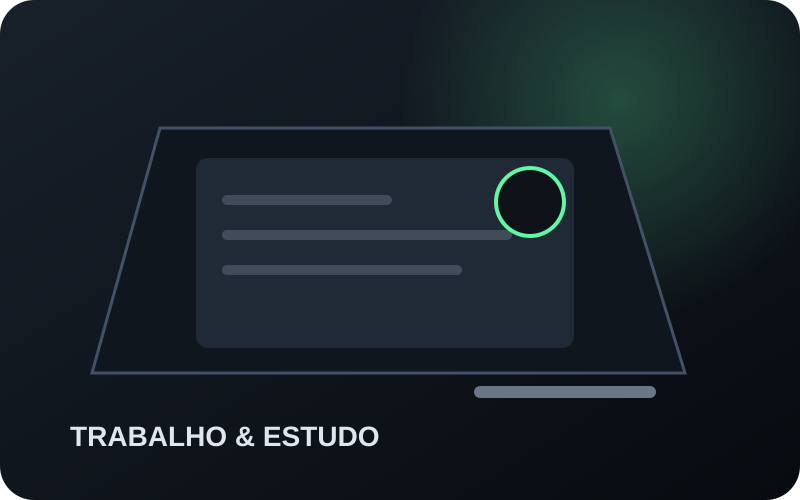

setup gamer
Setup gamer custo-benefício: onde investir primeiro
Guia direto para priorizar desempenho, monitor e conforto no setup gamer antes de gastar com extras, com comparações de produtos por perfil de uso.

Os guias organizam decisões evergreen para reduzir erro de compra e evitar que uma especificação isolada vire recomendação automática.
Explorar biblioteca →

Decisões evergreen para reduzir erro de compra.
Guia direto para priorizar desempenho, monitor e conforto no setup gamer antes de gastar com extras, com comparações de produtos por perfil de uso.
Guia clean-room para montar uma estação híbrida avaliando ergonomia, monitor, áudio, conectividade e necessidades reais de trabalho e jogos sem duplicar equipamentos por padrão.
Guia clean-room para planejar um setup gamer por objetivo, compatibilidade e ergonomia, evitando uma lista universal de compras.
Guia editorial Córtex para comparar headsets por conforto, microfone, conectividade, compatibilidade e adequação ao uso, sem depender de preço promocional ou ranking automático.
Comparativo por mobilidade, autonomia, compatibilidade e praticidade para decidir entre conexão com fio e sem fio sem depender de promoções momentâneas.
Guia de compra para jogos competitivos que separa especificações verificáveis de promessas de vantagem, com foco em conectividade, conforto, comunicação e reprodução espacial.
Guia evergreen para comparar notebook gamer por configuração real, potência gráfica, tela, memória, armazenamento, expansão e uso pretendido, sem transformar o nome da GPU em ranking automático.
Guia para escolher um único notebook para estudar, trabalhar e jogar sem avaliar desempenho isoladamente de peso, bateria, tela, conectividade e rotina de transporte.
Comparativo clean-room entre notebook gamer e desktop considerando mobilidade, espaço, manutenção, expansão e custo do ecossistema, sem transformar formato em ranking universal.
Guia de compra para streaming que compara resolução e frame rate, campo de visão, foco, conexão, iluminação e controles sem transformar 4K ou HDR em sinônimo automático de melhor imagem.
Comparativo prático para entender quando uma webcam 4K traz benefício real e quando uma solução 1080p a 60 fps já atende melhor ao fluxo de streaming.
Guia para montar um setup de streaming por etapas, separando o essencial do opcional e evitando comprar equipamentos antes de identificar o gargalo real.